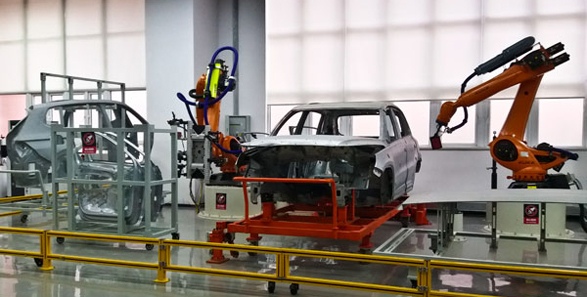
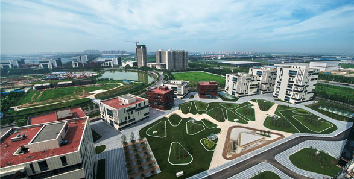
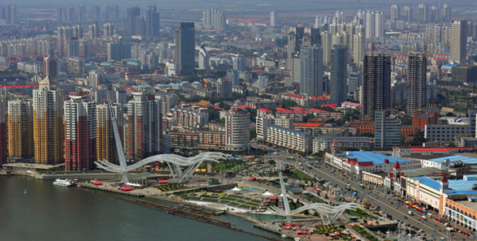
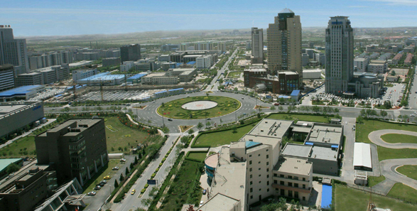
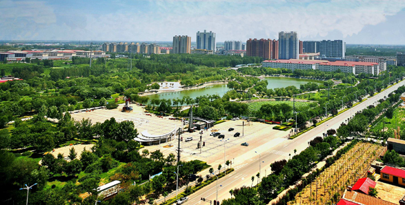

美丽天津
更多>>
天津市认真贯彻落实党中央、国务院的决策部署，坚持以新发展理念为引领，以推动供给侧结构性改革为主线，加快体制机制创新催生动力，搭建创业平台集聚资源，出台支持政策优化发展环境，加大引才聚才力度提供保障，全力推进大众创业、万众创新，进一步激发全社会创业创新活力，有力促进经济转型升级和提质增效。

天津科技成果转化摸清家底
据了解，目前本市尚无成体系的科技成果转化情势观察，《观察》填补了相关空白，首次面向全市梳理科技成果转化情况...... 【详细】
- 天津市人工智能科技重大专项启动实施
- 西青区青年创新创业大赛决赛 40个参赛项目入围
- 宝坻以项目带动创新 助科技型企业降成本增动能
- 新区科技创新资源加速 产值亿元以上科企1452家
- “空中列车”下线最高时速70公里 安全性更高
天津将围绕“一基地三区”功能定位，把承接北京非首都功能作为核心任务，大力推进交通、生态、产业等重点领域率先突破，进一步增强创新驱动、体制改革、试点示范三个关键支撑，发挥比较优势，更好服务区域协同发展。

人民日报：京津冀共唱文化创意大戏
第七届天津滨海国际文化创意展交会将于9月22日—24日在天津滨海新区未来科技城渤龙湖创意街区启幕…… 【详细】
- 天津市教育服务京津冀协同发展持续发力
- 京津冀大数据协同处理中心揭牌 将推动产业融合
- 新华社：京津冀轨道“一小时交通圈”初步成形
- 京津冀迎来“复兴号”动车组 天津—北京南19趟
- 2017职称评审工作启动 实现京津冀职称资格互认
为了迎接第十三届全国运动会的召开，全面提升城市管理水平和城市文明程度，日前，天津开展了迎全运城市综合整治工作，大干四季度、奋战300天，深入推进美丽天津建设，提升城市“美化、绿化、净化、亮化、序化”水平，以环境优美、服务优良、安全有序、文明和谐的城市形象迎接全运会的召开。

天津美丽绽放拥抱绿色全运
第十三届全国运动会即将在清新亮丽的滨海城市天津拉开帷幕，天津准备好了吗？记者近日在天津采访，感受到的是：美丽天津，绽放笑容；绿色全运，迎接宾朋…… 【详细】
- 白天夜晚都有新“津彩”拆除109根烟囱视野更好
- 天津：提升市容环境 综合保障全运
- 读图：美丽天津迎全运 市容环境彰显特色
- 砥砺奋进的五年：让绿色成为天津发展底色
- 瞰天津：家门口的绿色福利 带给百姓更多获得感
天津将通过进一步加快滨海新区开发开放、高水平建设自由贸易试验区、积极参与“一带一路”建设等举措，坚持以开放促改革、促发展，大力推进行政高效化、投资自由化、贸易便利化、金融国际化，努力构建开放型经济新体制。

“一带一路”建设“碰撞”天津发展
中文脱口而出，”我觉得差别不大”，她笑着说，随后不忘用英文补充一句，“the same”……【详细】
- 天津港开通第三条国际班列 精准服务“一带一路”
- 前7月国内招商引资新优化 天津吸引内资破三千亿元
- 砥砺奋进的五年：融入开放大格局 形成天津新优势
- 砥砺奋进的五年：精准招商 为产业发展提质增效
- 砥砺奋进的五年：在“一带一路”上加速跑
近年来，天津市以解决市民最关心、最直接、最现实的利益问题作为保障和改善民生的基本原则与出发点，从2007年开始坚持每年实施“20项民心工程”，让市民充分享受到改革发展的成果。“20项民心工程”，有力推动了滨海新区、中心城区、各区县三个层面联动协调发展，天津的城市面貌越来越好，百姓得到的实惠越来越多。


全运普惠全民 共迎健康中国
这种回归，既是中国体育改革的结果，更是进一步深化改革的动力……【详细】
- 天津将健康融入政策 以全运惠民推进健康中国
- 天津20项民心工程 今年将有万余套限价房上市
- 天津：民心工程 利民多多 多领域交出满意答卷
- 运动健身主题公园近期向市民集中开放 引得点赞
- 中青报：天津全运 中国体育开启“全民模式”
本网站由中华人民共和国第十三届全运会组织委员会主办 北方网承办 津ICP备08001569号-3